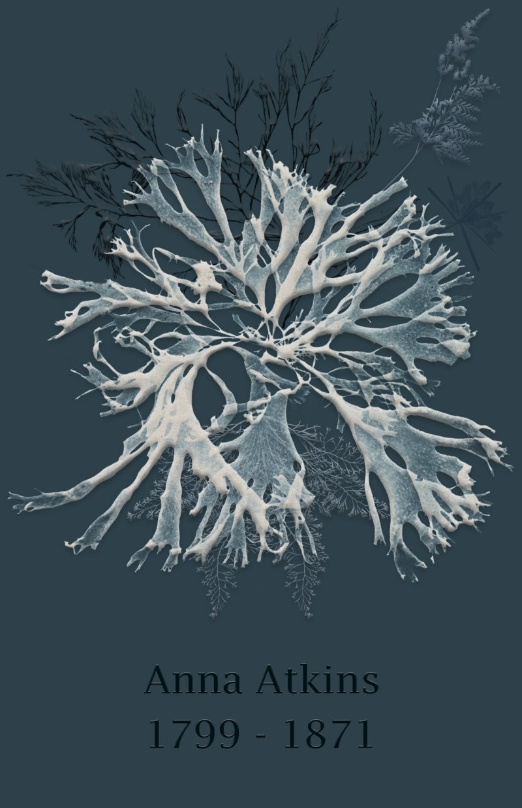

Back
Poster for a Pioneering Botanist: Anna Atkins
This poster project celebrates Anna Atkins, the 19th-century pioneer of photography and botanical art, whose groundbreaking work with cyanotypes combined scientific precision with artistic beauty. Using Adobe Photoshop, I designed a visually compelling poster that integrates images of Atkins’ original cyanotype prints with elegant typography reflecting her lifetime (1799–1871).
The composition highlights her enduring influence on art and science, capturing the delicate interplay between light, nature, and history. This piece aims to pay tribute to her legacy and make her contributions accessible to a modern audience.
Tools & Techniques:
- Software: Adobe Photoshop
- Design Elements: Cyanotype-inspired color palette, botanical imagery, custom typography
- Focus: Historical accuracy, artistic homage, and engaging visual storytelling